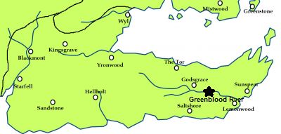

Greenblood
The Greenblood is one of the principal rivers of Dorne. At its mouth lies Planky Town. It takes its name from the murky green waters which are slow-moving and shallow. The Vaith river feeds into the Greenblood.
The Orphans of the Greenblood are the descendants of the Rhoynar who came to Dorne after the Rhoynar Invasion but refused to assimilate and continue to practice the traditions of their ancestors. They live on rafts along the river Greenblood and consider themselves orphaned from their Mother Rhoyne. It’s said that when they first came to Dorne they built their smaller boats from the burned carcasses of the ships they used to cross the narrow sea.
The orphans of the Greenblood pole their boats up and down the river, fishing, picking fruits, and doing whatever work is required. They dance and sing on the river, and are also said to have great knowledge of the healing arts, able to cure warts and produce the best midwives
